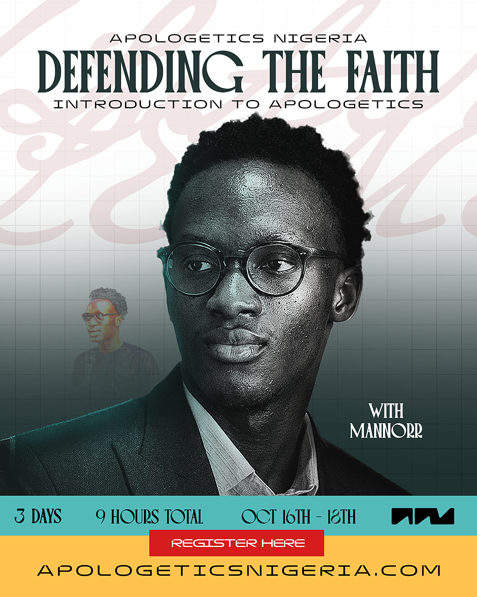

Defending
the Faith.
A three-day introduction to apologetics for believers who are tired of going quiet when the hard question comes. Three evenings. Nine hours. No cost.

Why this training
The questions are already being asked.
Most believers are not short on faith. They are short on language — the words to explain why they believe what they believe when someone pushes back.
So the conversation gets avoided. The colleague's objection goes unanswered. The child's question gets a shrug. The Muslim neighbour is met with silence, or worse, with something confidently said and badly sourced.
Scripture does not leave us there. We are told to be ready always to give an answer to every man that asketh a reason of the hope that is in us, with meekness and fear. That readiness is learnable. Over three evenings, we will build it.
“How do you know God exists — and not just yours?”
“The Bible has been changed. Everyone knows that.”
“Jesus never claimed to be God. That came later.”
“Islam has the Quran. Where is your evidence?”
“Why would a good God allow all this suffering?”
The three evenings
What we will cover.
Each evening runs three hours — teaching, worked examples, and live Q&A. Come to all three if you can; each one stands on its own if you cannot.
Foundations
- What apologetics is — and what it is not
- The case that God exists: cause, design, and moral law
- Why the Bible can be trusted as a historical document
- Manuscripts, transmission, and the “it was changed” objection
Jesus & Islam
- The historical evidence for the death and resurrection of Christ
- Did Jesus claim deity? Reading the text honestly
- Engaging Islam through its own primary sources
- Common objections — and how to answer without insult
Doubt & the conversation
- Suffering, evil, and the questions that hurt
- Answering atheism and the “no evidence” claim
- Handling your own doubts without fear
- How to actually start — and finish — the conversation
Who it is for
No background required.
If you can read your Bible and hold a conversation, you can do this training. It is built for Nigeria first, and open to anyone, anywhere.
Your facilitator
MANNORR
Nifemi Adeniran is the founder of Apologetics Nigeria, where he examines the claims of Islam through its own trusted sources and makes the historical case for Christ.
He writes and teaches at the intersection of history, philosophy and Scripture — with a simple conviction: the truth does not need to shout, and it does not need to mock. It only needs to be told carefully, and told well.
He will be teaching all three evenings, and answering questions live.

Registration
Save your seat.
Registration is free. We will send your joining link and a reminder before each session.
- Completely free — no ticket, no fee
- Live online, joining link sent by email
- Sessions recorded — replays sent to everyone registered
- Notes and slides shared after each evening
- Open worldwide, hosted from Lagos
Questions
Before you register.
Is it really free?
Yes. There is no ticket and no fee. If the training serves you and you would like to help us keep doing it, you are welcome to give — but nothing is expected, and nothing is gated.
Will the sessions be recorded?
Yes. Every evening is recorded and the replay is sent to everyone who registered, so a missed session is not a lost session.
What if I can only make one or two evenings?
Still register. Each evening stands on its own, and you will receive the recordings for the ones you miss.
Do I need any prior study?
None at all. We start from the beginning. If you have studied apologetics before, the Islam and resurrection material on Day 2 will still give you plenty to work with.
Can I bring my church group or fellowship?
Please do. Ask each person to register with their own email so they receive their own joining link and replays. If you are bringing a large group, mention it in the last question on the form and we will follow up.
I am not a Christian. Am I welcome?
Completely. Come and hear the case made and press it where you think it is weak. Every session ends with open Q&A, and honest questions are the ones we most want.
Which platform will it be on?
The training runs live online. Your joining link will be emailed to you before the first session, along with a reminder each evening.